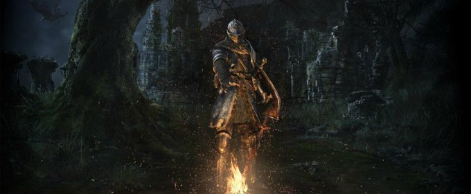

¿Merece la pena Dark Souls Remastered en Switch?

Ya está en la calle Dark Souls Remastered en Nintendo Switch, un port muy conseguido y que ha sabido salvar con ingenio la dificultad de llevar un juego de estas características a la híbrida. Lo que pretendo hacer en este artículo es explicaros sus virtudes y fallos, así como responder a las preguntas más habituales en torno a las distintas versiones de esta remasterización.
Ya está en la calle Dark Souls Remastered en Nintendo Switch, un port muy conseguido y que ha sabido salvar con ingenio la dificultad de llevar un juego de estas características a la híbrida. Lo que pretendo hacer en este artículo es explicaros sus virtudes y fallos, así como responder a las preguntas más habituales en torno a las distintas versiones de esta remasterización.
Pero para poder incrustar Dark Souls Remastered en Nintendo Switch se han tenido que hacer sacrificios. En lo que respecta a los ajustes gráficos, el juego rasca un poquito en lo que se refiere a los frames. No son 30 estables en todo momento, pero las caídas jugando en portátil son mínimas y perfectamente asumibles, extiendo esta cuestión aquí, centrándome en Ciudad Infestada. Más sacrificios se han hecho en la ambientación y animaciones.
¿Recordáis el dragón rojo del puente? Sus movimientos han perdido frames de animación. A veces, su cola se mueve varios metros de forma brusca. Los efectos de partículas y humo también se han desvanecido, el fuego de la hoguera también es menos intenso. El cielo también ha sufrido recortes, perdiéndose, por ejemplo, la luna nocturna.
Si hablamos del control, el recorrido del stick y la propia disposición de Nintendo Switch hace que te sientas más torpe de lo debido en las situaciones más tensas, Es necesario un reaprendizaje de cómo jugar, pero se acaba haciendo llevadero. Con estos datos sobre la mesa, vamos con las preguntas que seguro que os estáis haciendo:
A esta pregunta respondo rotundamente que no. Los recortes gráficos hacen que pierda parte de esa tenebrosa ambientación, y las animaciones del personaje o de criaturas fantásticas pueden ser mejores. Todo se optimiza al jugarlo en sobremesa, pero se sigue sintiendo como una versión ajustada para un sistema al que le cuesta hacerlo todo bien.
Si nunca has jugado a Dark Souls, elige cualquier otra versión de Dark Souls Remastered para PS4, Xbox One o PC. Si quieres jugar a la original, quédate con la versión de PC, pues puedes meterle mods para mejorar el rendimiento. De todas formas, sigue sin compensar. El rendimiento del primer Dark Souls hace llorar al niño Jesús.
Tampoco recomiendo jugar por primera vez a esta serie con la opción de pausar la partida que puedes encontrar aquí, porque la incertidumbre de no poder hacerlo, de sentirse indefenso en todo momento, es parte de la experiencia. Si te invaden, poder parar el juego y tomarte unos segundos para respirar le quita tensión al momento. Jugando en el pantano, antes de llegar a Quelaag, me invadió Mildred y no me acordaba de que aparecía ahí. Por instinto, pausé la consola y me tomé mi tiempo para pensar cómo encararía el combate, y Dark Souls no es eso. Esta opción, a la postre, hace que se desvirtúe lo que Hidetaka Miyazaki pretendía al diseñar este título.
Pero a esta digo que sí. Yo ya he visto como la luna bañaba el pelaje de Sif, cómo el dragón del puente abanicaba con ritmo su cola a modo de señuelo para que corriera contra él, y lo que quiero ahora es una forma rápida y cómoda para volver a encontrarme con Artorias, acabar de comprender elementos del lore que me faltaban por entender y volver a maldecir el veneno de la Ciudad Infestada. Ahora sí que quiero detener la partida si me invaden.
En definitiva, y para confirmar mis buenas impresiones, sí, la versión de Switch jugada en modo portátil es perfecta para ti si eres como yo: alguien que ama la saga, que ya se ha acabado el juego varias veces y que quiere tener una versión por casa que le permita hacer otra run de la forma más accesible posible en la comodidad y distensión de tu baño.
Dark Souls Remastered en Switch no tiene el mejor rendimiento posible, tampoco la mejor calidad gráfica ni tampoco el control más fino. Pero se puede jugar en portátil y detener la partida cuando se quiera, y eso es lo que yo busco ahora en este juego. Eso no quiere decir que esta sea una mala manera de entrar en la saga, para nada, solo que hay opciones mejores.
Además de esto, mantengo las mismas impresiones que tenía de Dark Souls Remastered en todas sus versiones. El juego tiene un problema con las luces: no están bien medidos los contrastes entre luz y oscuridad, y se han añadido unos pequeños ajustes para facilitar la experiencia que tendrían que estar mejor pensados, pero todo eso ya os lo hemos contado en el análisis correspondiente.
En resumen: la versión de Switch está muy bien, pero lo importante es que contamos con versiones de sobra y bien ajustadas de un videojuego fabuloso: así que elegid la opción que más os guste y jugad de Dark Souls. Vuestra vida cambiará un poquito, yo empecé a estudiar el videojuego tras conocer a Sif, así que ni os lo penséis.